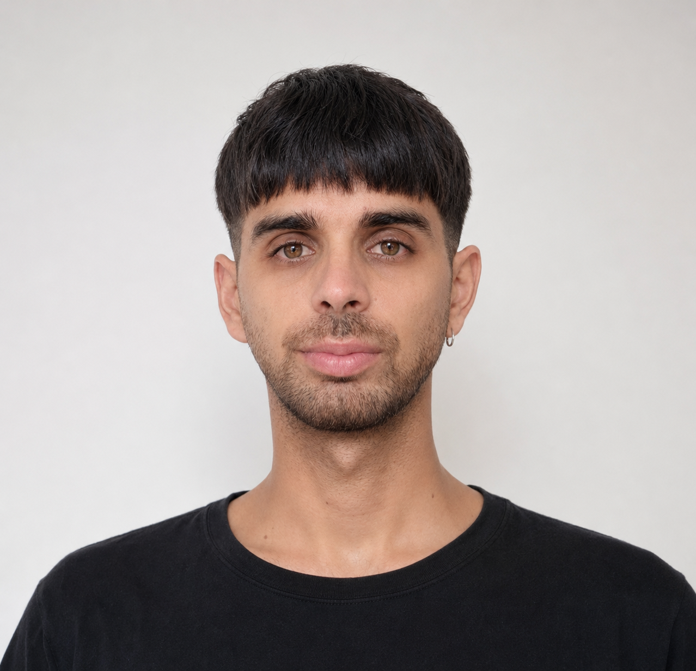

Arte · Tecnología · Educación
Docente de Música y Arte, productor musical, técnico de sonido y artista interdisciplinario. Su práctica se desarrolla en la convergencia entre el arte, la tecnología y la educación, explorando las posibilidades creativas del sonido, la imagen y los medios digitales.

Arte · Tecnología · Educación
Matías Sosa es docente de Música y Arte, productor musical, técnico de sonido y artista interdisciplinario. Su práctica se desarrolla en la convergencia entre el arte, la tecnología y la educación, explorando las posibilidades creativas del sonido, la imagen y los medios digitales.
A través de la producción musical, la síntesis sonora, las artes audiovisuales, la programación creativa y el diseño de experiencias interactivas, investiga nuevas formas de creación, percepción y participación.
Su trabajo combina la experimentación artística con la práctica pedagógica, entendiendo la tecnología no solo como una herramienta, sino como un lenguaje capaz de ampliar las formas de expresión, aprendizaje y construcción de conocimiento.
Composición, arreglos y producción integral de proyectos musicales. Desde la idea hasta el producto final, con profundo conocimiento de géneros y estéticas sonoras diversas.
Ingeniería de mezcla y masterización orientada a obtener el balance, la espacialidad y la dinámica que cada proyecto requiere. Trabajo en estudio y remoto.
Operación y diseño de sonido en vivo para espectáculos, eventos, teatro y música. Experiencia en diferentes formatos y escalas de producción.
Docencia de Música y Arte con enfoque en la integración de tecnología como lenguaje expresivo. Talleres, cursos y formación pedagógica innovadora.
Exploración de la síntesis como práctica creativa y artística: síntesis sustractiva, FM, granular, modular. El timbre como material compositivo.
Investigación en la intersección del sonido, la imagen y los medios digitales. Programación creativa, visuales en tiempo real y experiencias interactivas.
La tecnología no es solo una herramienta — es un lenguaje capaz de ampliar las formas de expresión, aprendizaje y construcción de conocimiento.
Todo proyecto comienza por entender su naturaleza, sus necesidades y el contexto en el que va a existir. La escucha activa define el camino.
La experimentación es parte del proceso creativo. Explorar posibilidades antes de establecer una dirección definida, abriendo el campo de lo posible.
Una vez encontrada la dirección, el trabajo minucioso de refinamiento y construcción asegura que cada detalle contribuya al todo.
El conocimiento y el proceso tienen valor en sí mismos. Compartirlo — a través de la educación, la colaboración o la presentación pública — es parte fundamental del trabajo.
Proyectos musicales producidos íntegramente: composición, arreglos, grabación, mezcla y mastering.
↗Operación de sonido para shows, recitales, teatro y eventos culturales de distintas escalas.
↗Piezas y experimentos en síntesis sonora y visual, explorando los límites del timbre y la imagen.
↗Propuestas pedagógicas que integran música, arte y tecnología en contextos formales y no formales.
↗| Producción Musical | Producción integral de proyectos musicales: composición, arreglos, instrumentación y dirección creativa. | Disponible |
| Mezcla Profesional | Mezcla de proyectos propios o ajenos. Trabajo en estudio y remoto, stems o sesión completa. | Disponible |
| Masterización | Masterización para distribución digital, vinilo o broadcast. Revisión y corrección de dinámica, espectro y loudness. | Disponible |
| Sonido en Vivo | Operación técnica para espectáculos, recitales y eventos culturales. FOH, monitor y diseño de sonido. | Disponible |
| Talleres & Docencia | Diseño e implementación de talleres sobre producción musical, sonido, síntesis y arte digital para instituciones y particulares. | Disponible |
| Proyectos AV & Arte | Colaboración en proyectos interdisciplinarios: instalaciones, performances, diseño sonoro para audiovisual. | Consultar |
Si tenés un proyecto en mente — musical, educativo, artístico o lo que sea — escribime. Me interesa colaborar con personas y proyectos que quieran hacer algo diferente.